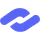
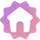

Discord has a total of 4 distinct server badges / classifications.
Verified
Obtainable: ✅
The green checkmark badge indicates a server is authentic. If a server is verified, it means that it has been confirmed to be affiliated and owned by the entity it claims to be part of.
In order to become verified, you must have a released game on Steam (or represent one) which has an invite to your server on its storepage. A game can be 'claimed' via the Developer Portal and must belong to a Team.
Historically, servers could apply for verification through https://discord.com/verification, before the program was indefinetly paused on July 14, 2023. Despite that, Discord still actively verified new servers. Brands may reach out directly to Discord to become verified, or may instead obtain the status through other partnerships or collaborations with Discord.
Verified servers receive the following perks:
- The badge next to the server name, which appears across all of Discord.
- Can upload stickers using the Lottie file format.
- Can set a vanity invite.
- Can set an invite splash.
- Can edit their own game profile (if applicable)
Trivia:
- Verification has no on-platform requirements. A server may get verified as soon as it is created with as little as just one member on it.
- Applicants that would not qualify for verification on their own may still be verified as part of a parent entity (i.e a music label or studio).
- The server always has access to a vanity invite and invite splash, regardless of its boost level.
- A verified server may be focused around and host NSFW / adult-only content. The responsibility to age restrict the server/channels always applies.
- A verified server does not need to be public/discoverable.
- Ownership of a verified server can only be changed by Discord.
Discord Partner
Obtainable: ❌ | Discontinued
The blue 'infinity' badge recognizes partnered servers. The partner program was aimed at recognizing the best servers and communities on Discord before ultimately being discontinued in late 2023. While the program no longer exists, existsing partners will maintain their status and perks until such time it is lost due to code of conduct violations.
Partnered servers receive the following perks:
- The owner receivces a free Nitro subscription (for as long as the server is partnered/they are the owner).
- The owner receives the

profile badge (for as long as the server is partnered/they are the owner) - The badge next to the server name, which appears across all of Discord.
- Can upload stickers using the Lottie file format.
- Always have access to highest audio quality for voice channels.
- Can set an animated server icon
- Can set a server banner.
- Can set a vanity invite.
- Can set an invite splash.
Trivia:
- A server may be both verified and partnered, receiving perks from both programs, though only the badge will be displayed across Discord.
- The server always has access to a vanity invite, invite splash, highest audio quality, animated icon and server banner, regardless of its boost level.
- Partnered sercers are not considered "official", despite commonly being mistaken as such (confused with verification).
- Partnered servers only require 250 members to become discoverable (instead of 1000).
- Ownership of a partnered server can only be changed by Discord.

DiscoverableServers with this badge next to their name are discoverable. They can be searched for on Server Discovery. If the server is boosted, the badge gains a background (). Unlike the verified and partnered badges, this one is displayed only next to the server name and in invites, and does not appeak elsewhere on Discord.
Trivia:
- A server must be discoverable to set a server profile banner (commonly believed to require a level 2 boosted server).
- Discoverable servers may set up a 'server webpage' for https://discord.com/servers.
- A server must have at least 1000 members to discoverable.

CommunityServers with this badge next to their name have the 'Community' feature enabled. If the server is boosted, the badge gains a background (

). Unlike the verified and and partnered badges, this one is displayed only next to the server name and in invites, and does not appear elsewhere on Discord.